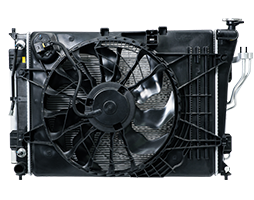

HVAC (Heating, Ventilation and Air Conditioning) Technologies
Hanon Systems has a long history designing and manufacturing heating, ventilation and air conditioning (HVAC) solutions for vehicle manufacturers. Today, Hanon Systems applies its engineering expertise to offer automakers a suite of solutions that focus on optimizing performance, improving fuel efficiency, and enhancing the sense of comfort and cleanliness for vehicle occupants. A key enabler to the company’s ability to quickly develop conventional and omnifarious HVAC solutions is the application of a standard design methodology, which results in solutions that are compact and weigh less, use less power, improve noise, and provide better airflow and temperature performance.
Omnifarious HVAC Designs
By completely redesigning the HVAC form, Hanon Systems is delivering automakers customized and modular solutions that enable placement in conventional and unconventional locations. This innovative approach allows vehicle designers more freedom to enhance the interior cabin design. Hanon Systems offers a suite of omnifarious HVAC designs to support the needs of today’s automakers across a range of conventional and electrified powertrains. Available in single, dual, triple and quad mode and temperature zone solutions, the omnifarious HVAC designs from Hanon Systems can incorporate a range of innovative HVAC technologies including the space-saving sliding door; hyper circumferential kinematics; defrost/demist distribution or temperature control; or one that incorporates the innovative high-efficiency blower scroll and wheel technology.
High-Efficiency Blower Scroll
Complacency is not an option at
Hanon Systems when technical experts are continuously working to develop new solutions that will bring value to automakers and end consumers. One example that advances the science surrounding blower technology is the high-efficiency blower scroll, an industry-first solution that improves scroll efficiency and delivers the same airflow with a 13 to 30 percent reduction in power consumption, and a 1 to 3 dB(A) reduction in noise, vibration and harshness (NVH) levels. This patented solution is proven in serial production to deliver equivalent or better performance in a smaller package compared to a larger HVAC, and can be applied to conventional, hybrid, electric and autonomous vehicles
Intelligent Air Quality
In its focus to develop solutions that enhance the well-being of people, Hanon Systems is extending its reach beyond cabin thermal comfort to include a portfolio of innovations centered on in-vehicle air quality. Combined or integrated separately into the HVAC module, the company’s suite of intelligent air quality solutions offer home-like comfort for vehicle occupants:
• Ultraviolet (UV) LED photocatalyst – a patented and award-winning innovation that improves cabin air quality by eliminating 99 percent of odor-causing bacteria from the evaporator and absorbed gases from outside of the vehicle. Easily mounted on the HVAC, the module creates a hydroxyl radical when activated to deodorize and purify the interior air of the vehicle.
• CO₂ sensor – monitors the level of carbon dioxide (CO₂) in the cabin and signals the HVAC to introduce fresh air when levels exceed the threshold.
• Fragrance system – allows occupants to select a scent and toggle the system on and off to diffuse aroma into the cabin. Installed on the HVAC, this solution contains integrated control algorithms that intermittently open and close to maintain the selected aroma intensity.
COMPRESSOR
Hanon Systems’s compressor is a key component of air-conditioning system and functions like the heart of a person. It is operated by force originating from the vehicle engine, and repeats a cycle of inhalation, compression and circulation of the refrigerant. It compresses low-pressure and low-temperature gas from the evaporator, converts it into high-pressure gas and relays it to the condenser. Hanon Systems is manufacturing 3 types of compressors such as Fixed Type (HS), Variable Type, and Rotary Suction Valve Type Compressors. Hanon Systems also manufactures the Electric Compressors, which are being developed by our advanced eco-friendly technology.
Fixed Swash Plate Compressor
HS Compressor which has been Hanon Systems’s first development compressor is fixed swash plate type. It maintains the constant compression ratio and discharge rate of refrigerant. Also, HS Compressor is able to adjust the cooling load through the on/off function of Clutch that is compressor’s component. It has been one of the Hanon Systems's competitive products as a low-cost product.
Rotary Suction Compressor
Hanon Systems’s rotary suction compressor has a fixed displacement swashplate design that draws refrigerant through the center shaft. It delivers improved fuel economy by creating less suction loss compared to a traditional suction valve. The fixed-angle sliding plate mechanism drives five low-friction, double-acting pistons that prevent seizure under extreme operating conditions. The integral pulse reducing design and available integrated mufflers reduce pressure pulses and improve NVH.
Variable Swash Plate Compressor
Hanon Systems's variable swash plate compressor can vary its duty cycle and change the amount of displaced refrigerant. This appropriate sizing of compressor displacement improves power consumption and fuel economy. To meet consumer demand for cabin cooling, available electronic controls provide consistent discharge air temperature, independent of drive conditions. Passengers feel more comfortable without a chance for over dehumidification
Electric Compressor
For traditional internal combustion vehicles, the air conditioning compressor is driven by a belt connected to the engine; therefore, it can only operate when the engine is running. Electric and hybrid vehicles operate under different conditions that preclude conventional compressor designs. For both “green” vehicle applications, Hanon Systems has developed an innovative solution – the electric compressor.
Hanon Systems’s state-of-the-art design includes an efficient scroll compressor controlled by an on-board electric motor and integrated power electronics. The electric compressor operates independently, enabling the cabin to be cooled even when the engine is off. Its compact design fits within the traditional belt-driven compressor package space, minimizing vehicle complexity in platforms that offer hybrid-electric model variants
Fluid Transport
Hanon Systems’s fluid transport portfolio consists of refrigerant lines, coolant lines, transmission oil cooler lines, accumulators, receiver driers and internal heat exchangers (IHX) FT. Applications include underhood and underbody lines for cars, trucks, hybrid and electric vehicles. Also available is a portfolio of customer fittings, including an innovative, patented metal seal fitting (MSF) FT that stops refrigerant from leaking into the environment. Industry leading design and global manufacturing capability has resulted in Hanon Systems becoming the largest automotive fluid transport supplier. Hanon Systems is relentlessly pursuing improved passenger comfort and fuel economy while reducing carbon emissions. Combined with a global manufacturing footprint, Hanon Systems provides customers with a superior performing product at a low cost.
Controller
Hanon Systems's climate controls offer automatic and manual front and rear temperature controls that operate the Heating, Ventilation and Air Conditioning System (HVAC). Through advanced development tools and hardware/software standardization, Hanon Systems is committed to delivering innovations that meet the market demands for reduced cost, high consumer perceived quality, improved occupant comfort, new Human-Machine Interaction (HMI) solutions and rapid development.
Ionizer
A cluster ion generator known as ‘CLIOGEN’ developed with domestic technology is a product which can completely remove chronic odors that are being generated from the use of Air-Conditioner/Heater. It provides pleasant driving environment through its ability to remove over 90% of the steam from the fan, bacteria and floating germs. An Air-Filtration device with application of CLIOGEN has already proven its outstanding superiority at ‘IR52 Jang Yeong Sil Award’ in 2009. Presently, it is applied on most of the luxury cars from Hyundai and Kia Motors namely, Genesis, Grandeur TG and YF Sonata. Air contains a number of minute pollutants that can be harmful to people's health, such as heavy metals that are less than O.5㎛, tire dust and soot. Hanon Systems's Air Filter prevents the inflow of airborne particles of over O.3㎛ that can be harmful to the people, while supplying fresh air to the driver and passengers.
Cooling Module

The cooling module consists of a radiator, condenser, and fan & shroud. In particular, as an integrated module, it reduces the labor and time needed to the airconditioning system and helps to ensure optimal performance through strict quality-control inspect ion of each modular component.
Condenser

Located at the very front of an auto engine compartment, the condenser cools and converts the heated and high-pressure refrigerant received from the compressor into a liquid form. The condenser can be installed separately or integrated into a cooling module with the radiator.